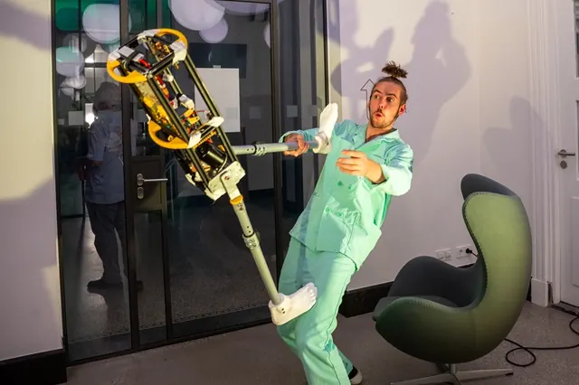

Nieuws ·
Ontdek de Magie van Modern Circustheater tijdens het Nationaal Theaterweekend in de Lindenberg

Het Nationaal Theaterweekend, een sprankelende viering van podiumkunsten, vindt plaats van 26 tot en met 28 januari 2024. Dit landelijke evenement zet de schijnwerpers op theaters met betaalbare voorstellingen en gratis randactiviteiten, allemaal voor slechts €10. De Lindenberg, gelegen in het hart van Nijmegen, is verheugd om voor de tweede keer deel te nemen met een bijzonder programma dat gericht is op modern circustheater. Dit jaarlijkse evenement biedt een geweldige kans voor families, met activiteiten en workshops die zowel volwassenen als kinderen vanaf 6 jaar zullen betoveren.
Zaterdag 27 januari: Jongleren op het Ritme van Muziek
Maak kennis met ‘Sounds Like Juggling’, een innovatief gezelschap dat jongleren en muziek combineert. Hun voorstelling ‘Puinbal’ is een creatieve fusie van muziek, jongleren en visueel theater. Na afloop van deze fascinerende show kunnen bezoekers deelnemen aan de workshop ‘Gooien met Geluid’, waar de kunst van muziekjongleren wordt verkend.
Zondag 28 januari: Een Dans tussen Circus en Visuele Kunst
Boost Producties brengt een unieke mix van acrobatiek, dans en visuele kunst. Hun voorstelling ‘OPEN’ is een boeiende exploratie van menselijke interacties, uitgevoerd met een gigantische, beweegbare schommel. Naast de voorstelling biedt de groep een acrobatiek-workshop aan en krijgen bezoekers de kans om zelf op de schommel uit de voorstelling te klimmen.
De Acrobot van Daniel Simu
Daniel Simu, een getalenteerde artiest, zal het publiek verwonderen met zijn zelfgebouwde Acrobot. Deze unieke act combineert jongleren en acrobatiek, waarbij Daniel samen met zijn robot klassieke circusacts uitvoert, een schitterend voorbeeld van de harmonie tussen mens en machine.
Praktische Informatie Nationaal Theaterweekend
– ‘Puinbal’ van Sounds Like Juggling: Zaterdag 27 januari om 15.30 uur, gevolgd door de workshop ‘Gooien met Geluid’.– ‘OPEN’ van Boost Producties: Zondag 28 januari om 15.30 uur.
– Tickets: Verkrijgbaar voor €10 via www.delindenberg.com/theaterweekend]
Adres
De Lindenberg, Ridderstraat 23, 6511 TM Nijmegen.
Mis deze betoverende weekendervaring niet, waar het moderne circustheater tot leven komt in de Lindenberg!